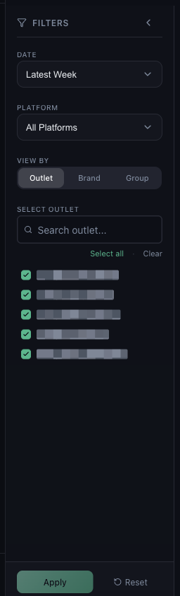

Changing the period, the platform and the outlet selection, and applying them

| Latest Week | The most recent full week Mynt holds. |
|---|---|
| Latest Month | The most recent full month. |
| Previous Month | The month before that. |
| Custom Range | Any two dates — use this to chase a specific period. |
Whatever you pick, the header chip shows the exact dates. Read those rather than trusting the label.
Choose All Platforms, or narrow to Zomato, Swiggy or Toing. Selecting one platform is the quickest way to tell whether a problem is platform-specific — see why one platform can be missing.
| Outlet | Each licensed location on its own. |
|---|---|
| Brand | Outlets grouped by the brand they trade under. |
| Group | Outlets grouped by the operational groups you defined. |
This changes how rows are aggregated, not what is included. See brands and groups.
Search, tick the outlets you want, or use Select all and Clear. A part-selected outlet list is the most common reason a total looks too low.
Or open Help & Support in Mynt and raise a ticket.